Любая нормативная документация (ГОСТы, технические условия, спецификации) обязательно предусматривает следующие виды контроля труб, соединительных деталей трубопровода (СДТ) и трубопроводной арматуры (ТПА):
В соответствии с требованиями нормативной документации контролю подвергаются химический состав, механические, технологические свойства труб, СДТ и ТПА и другие параметры.
Визуальный контроль наружной поверхности труб является обязательным видом контроля для всех типоразмеров и назначений труб, выпускаемых предприятием. Производится непосредственно на инспекционных столах контролерами без применения увеличительных средств. Осмотр поверхности производится участками с последующей перекантовкой каждой трубы таким образом, чтобы осмотренной оказалась вся поверхность трубы.
Визуальный контроль внутренней поверхности труб является традиционным для труб общепромышленного назначения. Суть его в том, что каждая труба, имеющая достаточно большой внутренний канал, с противоположной от контролера стороны просвечивается электролампой или подсветкой рефлекторного типа, для эффективности осмотра внутренней поверхности по всей длине трубы. Также осуществляется контроль с применением перископов по специальной методике с увеличением участка контролируемой поверхности. Контроль труб с малым внутренним сечением (например, капиллярных) осуществляется невооруженным глазом или с применением увеличения (в зависимости от требований нормативной документации) на образцах, разрезанных вдоль образующей трубы ("лодочка").
Приборный контроль применяется для оценки качества наружной и внутренней поверхности труб в соответствии с требованиями нормативной документации или по согласованию с заказчиком. Приборами для такого контроля являются установки ультразвукового контроля.
Толщина стенки проверяется на обоих концах трубы микрометром трубного типа МТ второго класса точности либо пружинным индикатором нажимного действия в нескольких диаметрально противоположных точках. Приборный контроль толщины стенки трубы производится ультразвуковыми приборами. Наружный диаметр контролируется вручную с помощью гладкого микрометра типа МК второго класса точности либо калиброванными скобами, не менее чем в двух сечениях. В каждом сечении производится не менее двух замеров во взаимно перпендикулярных плоскостях. Приборный контроль применяется для труб ответственного назначения и производится одновременно с контролем сплошности поверхности, толщины стенки на ультразвуковых приборах.
Требования по кривизне труб, как правило, обеспечиваются технологией производства. По требованию нормативной документации производится замер фактической кривизны поверочной линейкой длиной 1 метр и набором щупов.
Контроль торцевого кольца (притупления) фаски производится по требованию нормативной документации с помощью измерительной линейки или шаблона.
Контроль угла фаски производится по требованию нормативной документации при помощи угломера или шаблона.
Замер длины труб производится с помощью линеек, рулеток или автоматически на специальных установках при помощи инкрементальных датчиков.
Контроль марок стали осуществляется стилоскопированием либо химическим или спектральным анализом.
Сегодня не существует одного универсального метода, который позволял бы измерить все свойства металлического изделия разом. Поэтому методы контроля качества применяются в комплексе: на стадиях разработки и изготовления — разрушающие, в процессе эксплуатации — различные неразрушающие. Выбор конкретного способа контроля зависит не только от специфики и назначения металлической конструкции, но и от многочисленных внешних факторов, которые непременно учитываются специалистами.
Целью использования неразрушающего контроля в промышленности является надёжное выявление опасных дефектов. Поэтому выбор конкретных методов НК определяется эффективностью обнаружения такого брака. На практике наибольшее распространение получил ультразвуковой контроль, как обладающий высокой чувствительностью, мобильностью и экологичностью. Электрические, магнитоэлектрические, магнитные и вихревые методы позволяют проводить контроль свойств проводящих сред, как правило, на поверхности и в подповерхностном слое. Метод течеискания применяют для контроля герметичности работающих под давлением сварных сосудов, баллонов, трубопроводов и т.п. В ЦПТНС № 4 применяются методы ультразвуковой, магнитопорошковой дефектоскопии, магнитоиндукционный метод неразрушающего контроля и гидравлические испытания.
Дефектоскоп — устройство для обнаружения дефектов в изделиях из различных металлических и неметаллических материалов методами неразрушающего контроля. К дефектам относятся нарушения сплошности или однородности структуры, зоны коррозионного поражения, отклонения хим. состава и размеров и др. Область техники и технологии, занимающаяся разработкой и использованием дефектоскопов, называется дефектоскопия. С дефектоскопами функционально связаны и другие виды средств неразрушающего контроля: течеискатели, толщиномеры, твердомеры, структуроскопы, интроскопы и стилоскопы.
Метод ультразвуковой дефектоскопии (рисунок 1) основан на принципе отражения ультразвуковых колебаний (УЗК). В испытуемый объект вводятся пучки УЗК; если они встречают на своем пути препятствие в виде дефекта, то часть их отражается и возвращается в дефектоскоп, другая же часть достигает раздела «объект – воздух» и возвращается в прибор с некоторым запозданием. На экране дефектоскопа эти отражения располагаются на расстоянии, соответствующем времени их возвращения. По их изображению на экране можно судить о размерах и месте залегания дефекта. С помощью ультразвукового метода можно точно определить координаты дефекта; метод обладает высокой чувствительностью к дефектам малых размеров, а также расположенным на большой глубине. Он позволяет контролировать состояние металла резервуаров и трубопроводов без их опорожнения, а при проверке угловых сварных швов является единственно возможным.
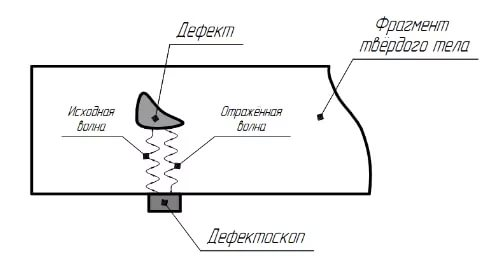
Рисунок 1 - Принцип метода ультразвуковой диагностики
На рисунке 2 представлена автоматизированная система, использующая метод ультразвуковой дефектоскопии.
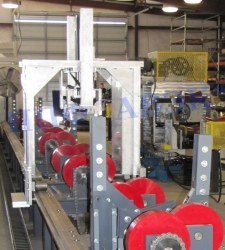
Рисунок 2 - Автоматизированная система ультразвукового контроля труб SONISCAN
К преимуществам метода ультразвуковой дефектоскопии можно отнести следующие утверждения:
Недостатки метода ультразвуковой дефектоскопии:
Магнитоиндукционный метод неразрушающего контроля (рисунок 3) основан на регистрации магнитных полей объекта контроля индукционными преобразователями. Индукционный метод может использоваться для контроля сварных труб, перемещающихся относительно индукционной головки. Метод отличается повышенной надежностью, может работать в сильных магнитных полях, однако требует перемещения магнитной головки с постоянной скоростью вдоль направления магнитного поля, при этом щель рабочего зазора в сердечнике должна быть перпендикулярна к направлению движения. Поэтому его рационально применять в массовом производстве (при большой длине швов).
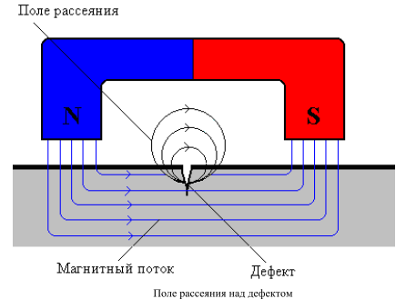
Рисунок 3 - Принцип магнитоиндукционного метода
На рисунке 4 представлена автоматизированная система, использующая магнитоиндукционный метод неразрушающего контроля.
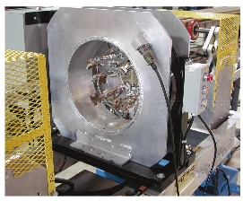
Рисунок 4 - Стационарная встроенная система для контроля труб ARTIS-3 ST M5400
Другой вариант магнитоиндукционного способа контроля реализован, например, в приборе MAGNATEST DH 3.623, который предназначен для контроля труб, прутков, проволоки, заготовок. В данном приборе используется многочастотный метод и специальные алгоритмы обработки сигналов, что значительно повышает надежность результата контроля.
Основным преимуществом магнитоиндукционного контроля является высокая скорость контроля (к примеру, установка Rotomat по контролю труб на Первоуральском новотрубном заводе имеет максимальную скорость контроля 2м/с).
Магнитопорошковая дефектоскопия (МПД) (рисунок 5) — метод неразрушающего контроля для обнаружения и локализации поверхност-ных и подповерхностных дефектов ферромагнитных материалов (важно: у измеряемых материалов должна быть относительная магнитная проницаемость не менее 40). Магнитопорошковый метод дефектоскопии основывается на выявлении локальных магнитных полей рассеяния, возникающих над дефектами. К диагностируемым с помощью такого метода дефектам относятся: непровар (дефект в виде несплавления в сварном соединении вследствие неполного расплавления кромок или поверхностей ранее выполненных валиков сварного шва), поры, трещины, волосовины, флокены (внутренние трещины (дефекты) в стальных поковках и прокатной продукции (иногда в слитках и отливках) и другие (дефекты с шириной раскрытия до нескольких мкм на глубине до 1-2 мм). Этим методом обнаруживаются дефекты:
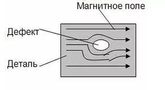
Рисунок 5 – Искажение магнитной суспензии при обнаружении дефекта
Преимущества магнитопорошковой дефектоскопии:
Недостатки магнитопорошковой дефектоскопии:
На рисунке 6 представлена автоматизированная система, использующая метод магнитопорошковой дефектоскопии.
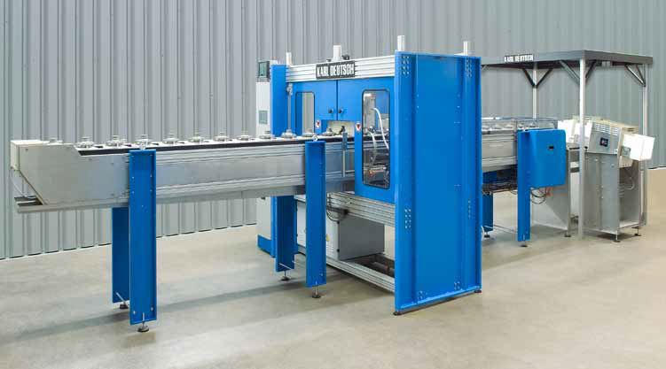
Рисунок 6 – Стенд намагничивания и контроля DEUTROMAT UWE с конвейерной подачей деталей
Метод неразрушающего контроля, основанный на магнитных потоках рассеяния (MFL), находит в настоящее время все более широкое применение в различных отраслях промышленности, где возникает задача контроля изделий и элементов из ферромагнитных материалов. Основное преимущество этого метода заключаются в том, что он позволяет обнаруживать дефекты сплошности материала, как на поверхности, так и по всей толщине изделия (стенки трубы, листа или сечению каната) при наличии достаточного зазора между датчиком и изделием (несколько мм), что обеспечивает высокую производительность контроля. Еще одним важным преимуществом является возможность оценки размеров обнаруженных дефектов по измерительным данным. При этом существенно, что процесс обнаружения дефектов и оценки их параметров по получаемым измерительным данным хорошо поддается автоматизации.
В ЦПТНС № 4, на участке неразрушающего контроля, относящегося к производственному участку отделки и сдачи насосно-компрессорных труб, используются следующие дефектоскопы производства компании INSTITUT DR. FOERSTER GMBH & CO. KG (Германия):
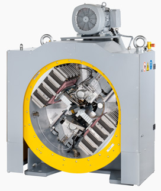
Рисунок 7 – Система датчиков Rotomat
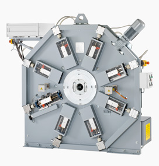
Рисунок 8 – Система датчиков Transomat
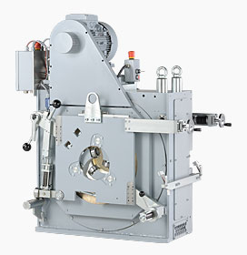
Рисунок 9 – Система датчиков Circoson
Системы Rotomat и Transomat обычно идут в одной связке под названием Rotomat/Transomat TR180.
В данной выпускной квалификационной работе учебное пособие для обучающихся по профессии Прессовщик труб и баллонов, поэтому более подробно в этом разделе рассматривается метод гидравлического испытания и приборы для его проведения.
Гидравлическое испытание — это нагружение оборудования или трубопроводов давлением с целью проверки их прочности и герметичности после изготовления, монтажа, периода эксплуатации, ремонта или замены оборудования.
Испытание труб давлением играет очень важную роль в технологическом процессе производства труб, ведь гидравлическое испытание — один из наиболее часто используемых видов неразрушающего контроля, проводящийся с целью проверки прочности и плотности сосудов, трубопроводов, теплообменников, насосов и другого оборудования, работающего под давлением, их деталей и сборочных единиц.
Гидравлическое испытание — необходимая процедура, свидетельствующая о надёжности оборудования и трубопроводов, работающих под давлением, в течение всего срока их службы, что крайне важно, учитывая серьёзную опасность для жизни и здоровья людей в случае их неисправностей и аварий.
Оборудование и трубопроводы считаются выдержавшими гидравлические испытания, если в процессе испытаний и при осмотре не обнаружено течей жидкости и разрывов металла, в процессе выдержки падение давления не выходило за пределы, объясняемые колебаниями давления вследствие изменения температуры жидкости, а после испытаний не выявлено видимых остаточных деформаций/
В трубном производстве гидравлическое испытание должна проходить каждая труба. В отличие от других методов неразрушающего контроля, допускающих предельные отклонения и погрешности от заданных величин в ту или другую сторону, гидравлические испытания не допускают погрешностей.
В зависимости от испытываемого оборудования и трубопроводов применяются различные гидроиспытательные установки: от передвижных до стационарных. На трубном производстве обычно используют стационарные установки высокого давления для гидроиспытаний труб.
Гидропрессы для проверки труб высоким давлением имеют практически одинаковую структуру и включают в себя следующие этапы: промывка, испытание, удаление воды.
Гидравлическое испытание труб производят на гидропрессах с двумя, так называемыми, головками. Концы трубы вставляют в головки гидропресса, где их герметически закрывают. Через особое отверстие в головках в трубу подается вода, через другое отверстие выпускается воздух, вытесняемый ею из трубы. После заполнения трубы водой подключают гидропресс, которым давление воды доводится до испытательного. Давление проверяется по манометру, установленному на одной из головок гидропресса.
Разработкой и внедрением установок гидроиспытаний баллонов и трубопроводов занимаются многие компании, как в России, так и за рубежом: ОАО «УралНИТИ» (г. Екатеринбург), ООО «Уральский Инжиниринговый Центр» (г. Челябинск), ООО «Пневмологика» (г. Москва), НПП «ТехМашКонструкция» (г. Самара), корпорация «Гидроэлекс» (г. Харьков, Украина), компания «Bracker GmbH» (г. Фрайгерихт, Германия) и другие.
Так, например, корпорацией «Гидроэлекс» был разработан полный пакет конструкторской документации, изготовлено и поставлено оборудование гидравлического пресса, способного испытывать трубы диаметром до 245 мм и развивать давление до 125 МПа (рисунок 10). В 2001 году были завершены монтажные и пусконаладочные работы, пресс вошел в строй. В 2011 году были модернизированы гидравлическая и водоэмульсионная системы пресса в соответствии с ужесточившимися требованиями.
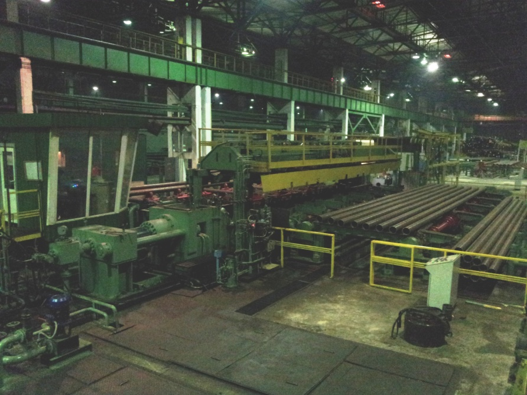
Рисунок 10 – Установка для гидроиспытаний труб сверхвысоким давлением «Sack»
ОАО «УралНИТИ» разработал и успешно внедряет установку гидроиспытаний трубопроводов (рисунок 11). Данная установка предназначена для испытания внутренним гидростатическим давлением до 70 МПа на прочность и герметичность насосно-компрессорных труб (НКТ) с навинченными муфтами при их ремонте или новых труб. Работа установки осуществляется в автоматическом режиме с управлением от программируемого контроллера.
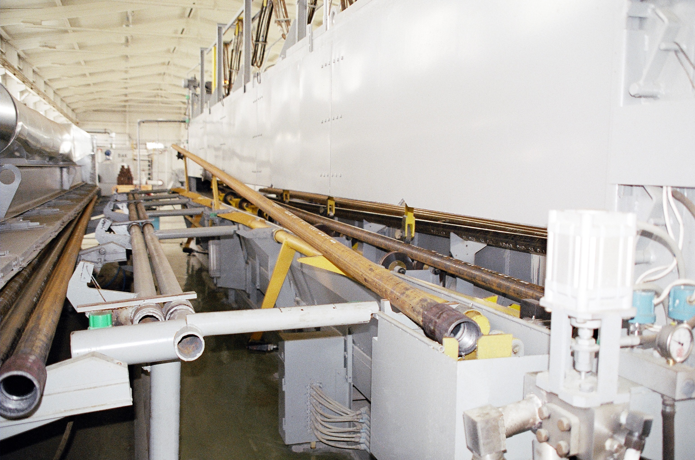
Рисунок 11 – Установка гидроиспытаний труб
В ЦПТНС № 4, на участке отделки и сдачи насосно-компрессорных труб установлены контрольные машины для испытания труб давлением производства фирмы «G.D.Bracker Souhne Maschinenbau GmbH» (рисунок 12). Гидропрессы предназначены для проведения испытаний на герметичность резьбового соединения «муфта – труба» насосно-компрессорных труб по ГОСТ 633-80. Гидропресс обеспечивает возможность проведения гидроиспытаний насосно-компрессорных труб с наружными диаметрами 60, 73, 89 и 114 мм для групп прочности Д, К, Е по ГОСТ 633-80, а после модернизации, проведенной фирмой ООО «Уральский Инжиниринговый Центр». также расширяются функциональные возможности оборудования и обеспечивается применение элементов, сертифицированных в соответствии с системой качества ISO 9001.
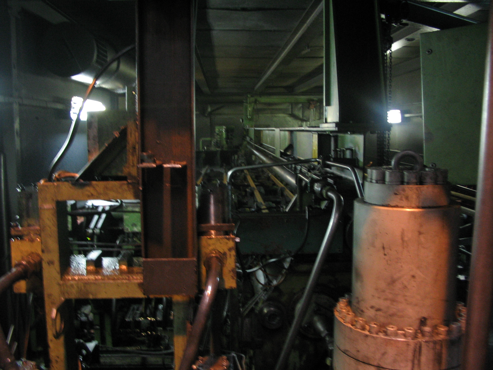
Рисунок 12 – Гидропресс "Bracker" на участке отделки и сдачи насосно-компрессорных труб ЦПТНС № 4 ОАО «ПНТЗ»
Структурная схема гидропресса «Bracker» выглядит следующим образом:
В таблице 4 приведены технические характеристики гидропресса «Bracker».
| Наружные диаметры испытываемых труб (муфт), мм | 60 (73), 73 (89), 89 (108), 114 (132) |
| Длина испытываемых труб, мм | 6000…10500 |
| Производительность гидропресса, при испытании труб 73×7, шт./ч | 144 |
| Испытательное давление, кг/см2 | 375…1000 |
| Поддержание испытательного давления от заданного не более, % | +10% |
| Вид кривой увеличения давления в трубе | не оговаривается |
| Время увеличения давления в трубе до 865 кг/см2, не более, с | 4 |
| Время выдержки под давлением регулируемое, с | 3…99 |
| Время зарядки мультипликатора, не более, с | 10 |